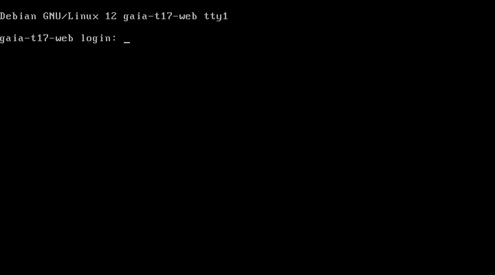
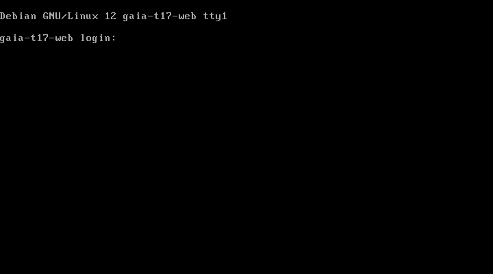

gaia-t17-web
OKOK since Nov 17 15:30:39. Host gaia-lab (192.168.1.30), policy t17, repository main.
You can return to
19:10:00
Nov 17, point 249. Test 125 restored it and booted it to a login prompt in 37s, 5m 33s ago.
Proven RPO
6m 50starget 20m
Theoretical RPO age of the newest backup
1m 50starget 20m
Proven RTO
37starget 10m
Proof age
5m 33smax 30m
Last 6 hours a backup every 5m, a restore test every 10m, the last 8 points kept
Latest restore test test 125 of point 249, Nov 17 19:11:17


Proven RTO 37s of the 10m target
restore 26sboot 11s
- OKboot11sserial console matched "(?m)login: *$": "gaia-t17-web login:"
- OKimage unchanged vdasha256 before and after are equal
- OKimage unchanged vdbsha256 before and after are equal
Evidence
- Bundle
gaia-t17-web-20261117T191041Z-b09261- Signature
- OKmanifest signed, all 10 files match
- Signed by
2695ee2e41e8978c…- Ledger
- entry 125; the check at 18:59 found 123 entries OK
- External anchor
- daily report 1 (Nov 17 18:59) recorded the head at entry 123
Verify offline, with the export and the mailed daily report
gaia evidence verify -pubkey anchor.pub -ledger ledger.jsonl -evidence-dir bundles -head gaia-daily-report-1.jsonStatus history since the VM was added
- WARNING→OK3h 46m so far
point 205 is proven by test 103: proven RPO 50s <= 20m0s, proven RTO 22s <= 10m0s, proof age 0s <= 30m0s
- OK→WARNINGfor 51s
the newest proven point (201, test 101) is 20m10s old, over the RPO target 20m0s
- UNKNOWN→OKfor 17h
point 1 is proven by test 1: proven RPO 45s <= 20m0s, proven RTO 14s <= 10m0s, proof age 0s <= 30m0s
- added→UNKNOWNfor 55s
there is no backup point that passed its post-backup check
Points 8 kept, 242 pruned by retention
| Point | Taken | Kind | Size | Check | Restore test |
|---|---|---|---|---|---|
| 250 | Nov 17 19:15:00 | incremental | 18 MiB | OK | not tested |
| 249 | Nov 17 19:10:00 | incremental | 21 MiB | OK | test 125 return here |
| 248 | Nov 17 19:05:00 | incremental | 20 MiB | OK | not tested |
| 247 | Nov 17 19:00:00 | incremental | 19 MiB | OK | test 124 |
| 246 | Nov 17 18:54:53 | incremental | 18 MiB | OK | not tested |
| 245 | Nov 17 18:49:53 | incremental | 20 MiB | OK | test 123 |
| 244 | Nov 17 18:44:53 | incremental | 18 MiB | OK | not tested |
| 243 | Nov 17 18:39:53 | incremental | 20 MiB | OK | test 122 |
Restore tests the newest 12, and those that did not pass
| Test | Point | Result | RTO | Finished | Evidence |
|---|---|---|---|---|---|
| 125 | 249 | OK | 37s | Nov 17 19:11:17 | OKverified |
| 124 | 247 | OK | 28s | Nov 17 19:01:04 | not checked yet |
| 123 | 245 | OK | 49s | Nov 17 18:51:30 | OKcheck 18:59 |
| 122 | 243 | OK | 29s | Nov 17 18:40:54 | OKcheck 18:59 |
| 121 | 241 | OK | 42s | Nov 17 18:31:11 | OKcheck 18:59 |
| 120 | 239 | OK | 23s | Nov 17 18:20:46 | OKcheck 18:59 |
| 119 | 237 | OK | 25s | Nov 17 18:10:49 | OKcheck 18:59 |
| 118 | 235 | OK | 46s | Nov 17 18:01:20 | OKcheck 18:59 |
| 117 | 233 | OK | 47s | Nov 17 17:51:20 | OKcheck 18:59 |
| 116 | 231 | OK | 46s | Nov 17 17:41:15 | OKcheck 18:59 |
| 115 | 229 | OK | 26s | Nov 17 17:30:49 | OKcheck 18:59 |
| 114 | 227 | OK | 22s | Nov 17 17:20:45 | OKcheck 18:59 |
| 102 | 203 | UNKNOWN | — | Nov 17 15:20:17 | no bundle |
| not tested: sandbox helper at /run/gaia-sandbox/sandbox.sock: Post "http://sandbox/v1/verify": EOF | |||||